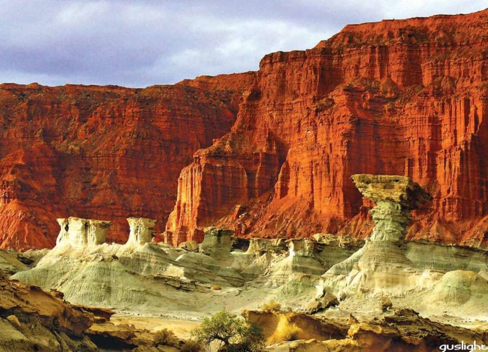

Parque Provincial Ischigualasto
Conocido como "Valle de la Luna", este sitio Patrimonio de la Humanidad es un importante yacimiento paleontológico donde se encontraron los dinosaurios más antiguos del mundo. Sus formaciones rocosas erosionadas crean un paisaje surrealista.